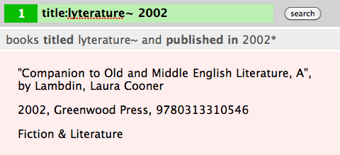
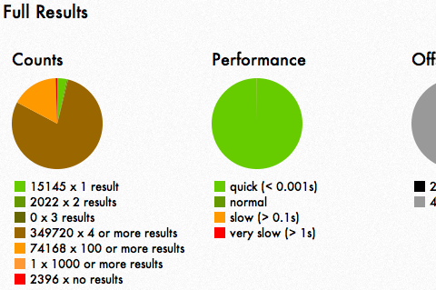
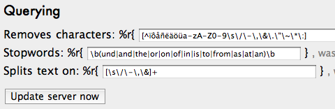

Picky is a standalone search server currently offering a HTTP interface (returning JSON) and a nice in-code Ruby configuration (no huge XML files). Also:
splits_text_on: /[\s\/\-\"\&]/pick*pecky~napoleon, title:war{ [:title, :author] => +3, [:isbn, :author] => -5 }get %r{/books} do
books.search params[:query]
end… and much more.
gem install pickyThere's a whole section devoted to getting started with Picky! See here for getting on your feet quickly :)
Offers a Ruby client that connects to the Server's JSON interface and provides a clever (in a helpful way) and easily configurable Javascript interface.
Including the interface in your views is as easy as
= Picky::Client.interface
and adding the
picky.min.js
file.
This is it: 
This is how you search for books with title similar to lyterature that were published in 2002.
The gem also contains useful methods to render results into the JSON that is sent to the Javascript interface, extracting just the ids, and much more.
gem install picky-clientThere's a whole section devoted to getting started with the Picky client! See here and scroll down to the client part on the left.
Clam is a simple log parser that starts a in-gem webapp and shows you relevant statistics about your app.
This is part of its interface: 
It shows you
and other things.
gem install picky-statisticsThen run:
picky stats path/to/pickys/log/search.log
If you are in the Picky server directory, the path is probably
log/search.log
.
You should see a message like:
Clam, Picky's friend, is looking at Picky's logfile.
... and showing results on port 4567.Go to localhost:4567 and you should see the statistics interface in its full glory!
More params are available, just enter
picky
in the console.
Suckerfish is an introspective system that allows you to look at parameters of a running Picky Server. Not only that, it allows you to change parameters on the fly.
This is part of its interface: 
Currently, you have the possibility to modify how the server handles query input.
Hit "Update Server now" and see the effects instantly on all queries.
Note: Only works with multiprocessing servers, like Unicorn.
gem install picky-live
Add this to
app/application.rb
in the server:
%r{/admin} => LiveParameters.newStart the server and enter:
picky liveYou should see a message like:
Suckerfish has sucked onto Picky at localhost:8080/admin.
Sinatra has taken the stage on port 4568...Go to localhost:4568 and fiddle with the parameters (server needs to be running).
More params are available, just enter
picky
in the console.